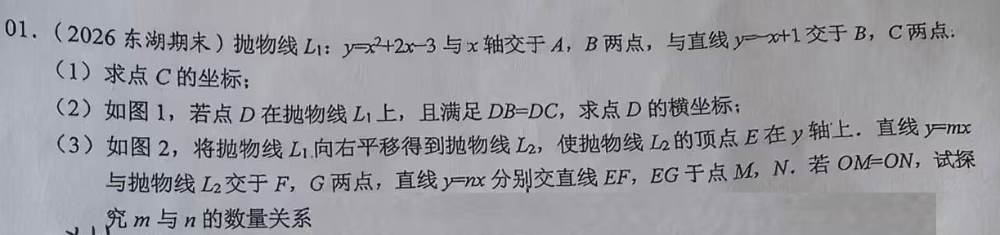
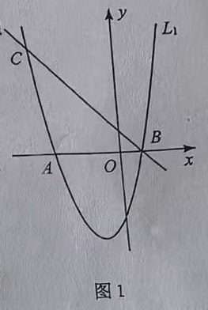
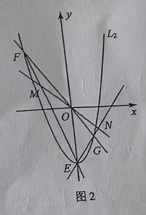
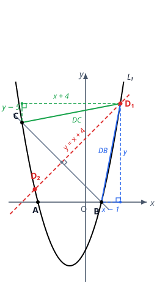

p27 抛物线交点、中垂线定 D 与 OM=ON 探究
抛物线综合
二次函数抛物线与直线交点垂直平分线平方差公式根与系数中点坐标
★★★★

📷 点击查看原图
[2026 东湖期末] 抛物线 L1:y=x2+2x−3 与 x 轴交于 A、B 两点，与直线 y=−x+1 交于 B、C 两点。
（1）求点 C 的坐标；
（2）如图 1，若点 D 在抛物线 L1 上，且满足 DB=DC，求点 D 的横坐标；

（3）如图 2，将抛物线 L1 向右平移得到抛物线 L2，使抛物线 L2 的顶点 E 在 y 轴上。直线 y=mx 与抛物线 L2 交于 F、G 两点，直线 y=nx 分别交直线 EF、EG 于点 M、N。若 OM=ON，试探究 m 与 n 的数量关系。

📌 知识点总结（点击展开／收起）
📌 知识点总结
| 知识点 | 说明 |
|---|
| 抛物线与 x 轴交点 | 令 y=0，解一元二次方程 |
| 两图象交点 | 联立两个解析式，交点横坐标就是方程的根 |
| 平方差公式 | a2−b2=(a+b)(a−b)，展开距离方程时避免硬乘 |
| 线段垂直平分线 | 到线段两端距离相等的点组成中垂线：DB=DC⟺D 在 BC 的中垂线上 |
| 抛物线平移 | 顶点式 y=a(x−h)2+k，左加右减（h）看顶点移动 |
| 根与系数（比较系数法） | x2+px+q=0 两根为 f、g，则 x2+px+q=(x−f)(x−g)，比较系数得 f+g=−p，fg=q |
| 中点坐标公式 | M、N 都在过原点 O 的同一直线上时，OM=ON⟺O 是 MN 中点 ⟺xM+xN=0 |
✍️ 解题过程
第（1）问：求点 C 的坐标
第一步：求 A、B。令 y=0：
x2+2x−3=(x+3)(x−1)=0⟹x=−3 或 x=1
所以 A(−3, 0)，B(1, 0)。
第二步：联立求 C。C 是抛物线与直线 y=−x+1 的另一个交点，联立：
x2+2x−3=−x+1⟹x2+3x−4=(x+4)(x−1)=0
x=1 正是点 B（说明直线确实过 B ✓），另一个根 x=−4，代入直线得 y=−(−4)+1=5。
✅（1）答案：C(−4, 5)
第（2）问：DB = DC，求 D 的横坐标
第一步：设点。D 在 L1 上，设 D(x, y)，其中 y=x2+2x−3。已知 B(1, 0)，C(−4, 5)。
第二步：把 DB=DC 两边平方，用勾股定理展开（水平、竖直差为直角边）。
(x−1)2+y2=(x+4)2+(y−5)2
移项后用平方差公式展开（避免硬乘）：
(x−1)2−(x+4)2=(2x+3)×(−5)=−10x−15
y2−(y−5)2=(2y−5)×5=10y−25
两者相加为 0：−10x−15+10y−25=0，即：
y=x+4
几何意义：y=x+4 正是 BC 的垂直平分线——到 B、C 距离相等的点组成中垂线，D 必须在它上面（可验证它过 BC 中点 (−23, 25) ✓）。
第三步：代回抛物线。把 y=x2+2x−3 代入 y=x+4：
x2+2x−3=x+4⟹x2+x−7=0
判别式 Δ=1+28=29>0，所以：
两个横坐标都符合题意（中垂线与抛物线有两个交点 D1、D2，见图）。

📷 点击查看原图
✅（2）答案：D 的横坐标为 2−1+29 或 2−1−29
第（3）问：OM = ON，探究 m 与 n 的数量关系
第一步：求平移后的 L2 与顶点 E。L1=(x+1)2−4，顶点 (−1, −4)。向右平移使顶点落在 y 轴上，需右移 1 个单位：
L2:y=x2−4,E(0, −4)
第二步：设 F、G，比较系数。F(f, mf)、G(g, mg) 都在 y=mx 与 L2 上，联立：
x2−4=mx⟹x2−mx−4=0
它的两根是 f、g，所以 x2−mx−4=(x−f)(x−g)=x2−(f+g)x+fg，比较系数：
f+g=m,fg=−4
第三步：写出直线 EF、EG，求 M、N 的横坐标。EF 过 E(0, −4) 与 F(f, mf)（f=0，因 fg=−4），斜率 =fmf+4：
EF:y=fmf+4x−4,EG:y=gmg+4x−4
M 在直线 y=nx 上，代入 EF：nx=fmf+4x−4，解得（分母不为 0，即 EF 与 y=nx 不平行）：
xM=f(m−n)+44f,同理xN=g(m−n)+44g
第四步：把 OM=ON 翻译成中点条件。M(xM, nxM)、N(xN, nxN) 都在过原点的直线 y=nx 上，所以 OM=ON 等价于 O 是 MN 的中点：
xM+xN=0
第五步：代入化简。
f(m−n)+44f+g(m−n)+44g=0
通分，分子为 0：
f[g(m−n)+4]+g[f(m−n)+4]=2fg(m−n)+4(f+g)=0
第六步：代入 f+g=m、fg=−4。
2×(−4)(m−n)+4m=−8m+8n+4m=0⟹4m=8n⟹m=2n
数值验证（取 m=2, n=1）：x2−2x−4=0，f=1+5≈3.236，g=1−5≈−1.236。代入第三步公式：xM=3.236+44×3.236≈1.789，xN=−1.236+44×(−1.236)≈−1.789，xM+xN=0 ✓。
反之，当 m=2n（且 EF、EG 与 y=nx 都相交）时上述每步都可逆，OM=ON 成立；退化情形 m=n=0 也满足 m=2n。
✅（3）答案：m=2n（即 n=2m）